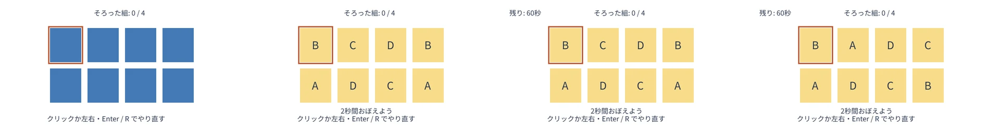
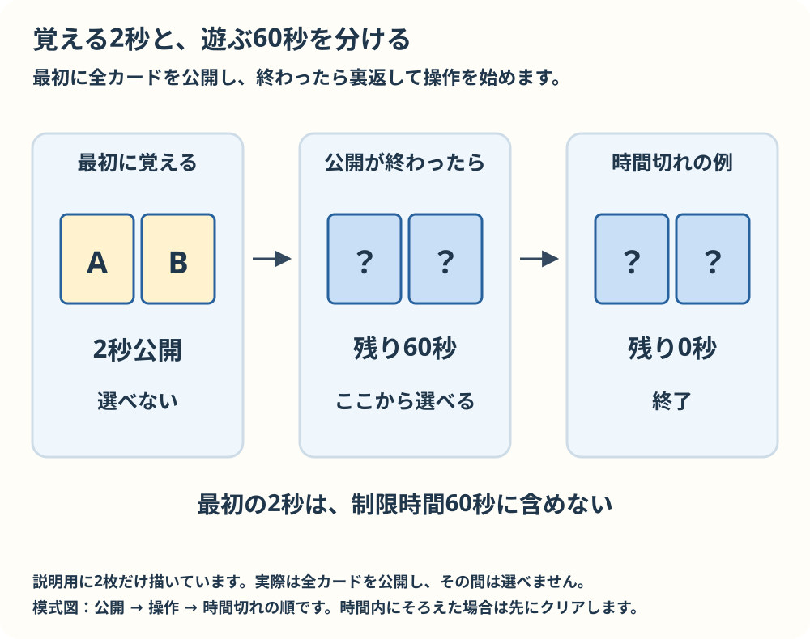

神経衰弱の発展
基本の完成版から3つの機能を順番に追加します。
始める前に
基本編の完成版から始めます。ZIPを展開してできたフォルダーでindex.htmlを開きます。ZIPには基本編の3ファイルが入っています。
WindowsでZIPを展開する（動画）
自分で作った基本版でも同じ内容なら使えます。
各段階の変更を上から順に作業用の script.js に加えます。変更前と同じ範囲を探して、変更後のコードに置き換えてください。保存したら index.html を開くか、再読み込みします。
ステップ 1：最初にカードを見せる
このステップの見本を図で見る
1000 < 2000 → 文字を表示
予告中は全カードが見え、めくる操作は待つ
2000 < 2000 は false
予告が終わり、カードを選べる
ゲーム画面とコードの前後を見る

このステップの見本
if (cards[i].open || cards[i].matched) ctx.fillText(cards[i].letter, x + 38, y + 68);
変わったコードの一例（script.js）if (cards[i].open || cards[i].matched || performance.now() < previewUntil) ctx.fillText(cards[i].letter, x + 38, y + 68);
見本で確かめること
始めると全部の文字が2秒見え、その間はカードをめくれません。
目標
最初の2秒だけ、すべてのカードを見せます。
確認欄までは準備中です。作業を順に進め、確認欄で保存して動作を確かめます。
書く場所と置き換えるコード
公開の終了時刻を覚える
作業用フォルダーの script.js で、次の範囲を探して置き換えます。
置き換える範囲
let cards, selected, firstIndex, secondIndex, closeAt, pairs, state;
置き換えるコード
let cards, selected, firstIndex, secondIndex, closeAt, pairs, state, previewUntil;
previewUntil はカードを見せ終える時刻です。
2秒後を公開終了にする
作業用フォルダーの script.js で、次の目印を探し、その直後に書きます。
目印
state = "playing";
書き足すコード
previewUntil = performance.now() + 2000;
開始時刻に2000ミリ秒を足すので2秒間だけ公開します。R で再開すると公開時間も数え直します。
公開中は表の色にする
作業用フォルダーの script.js で、次の範囲を探して置き換えます。
置き換える範囲
if (cards[i].open || cards[i].matched) ctx.fillStyle = "#f8dc8b";
置き換えるコード
if (cards[i].open || cards[i].matched || performance.now() < previewUntil) ctx.fillStyle = "#f8dc8b";
表向き、そろったカードに加え、公開中も表の色にします。
公開中は文字を描く
作業用フォルダーの script.js で、次の範囲を探して置き換えます。
置き換える範囲
if (cards[i].open || cards[i].matched) ctx.fillText(cards[i].letter, x + 38, y + 68);
置き換えるコード
if (cards[i].open || cards[i].matched || performance.now() < previewUntil) ctx.fillText(cards[i].letter, x + 38, y + 68);
文字の表示にも同じ公開中の条件を加えます。
公開中の案内を表示する
作業用フォルダーの script.js で、次の目印を探し、その直後に書きます。
目印
ctx.fillText("そろった組: " + pairs + " / 4", 300, 50);
書き足すコード
if (performance.now() < previewUntil) ctx.fillText("2秒間おぼえよう", 290, 365);
公開終了前だけ (290, 365) に案内を描きます。
公開中はカードを選べないようにする
作業用フォルダーの script.js で、次の範囲を探して置き換えます。
置き換える範囲
if (closeAt !== 0 || cards[selected].matched || cards[selected].open) return;
置き換えるコード
if (performance.now() < previewUntil || closeAt !== 0 || cards[selected].matched || cards[selected].open) return;
turnCard() の先頭で公開中の処理を止めます。
公開中のキー入力を止める
作業用フォルダーの script.js で、次の範囲を探して置き換えます。
置き換える範囲
}
if (state !== "playing" || closeAt !== 0) return;
置き換えるコード
}
if (state !== "playing" || closeAt !== 0 || performance.now() < previewUntil) return;
キー操作の先頭でも公開中の入力を止めます。
公開中のクリックを止める
作業用フォルダーの script.js で、次の範囲を探して置き換えます。
置き換える範囲
if (state !== "playing" || closeAt !== 0) return;
置き換えるコード
if (state !== "playing" || closeAt !== 0 || performance.now() < previewUntil) return;
クリックの先頭でも公開中の入力を止めます。
保存後の確かめ方
保存してゲーム画面を更新する（動画）
index.html を再読み込みします。始めると全部の文字が2秒見え、その間はカードをめくれません。 この段階の見本を開く
小さな練習
2000を3000に変えて、覚える時間を比べます。 練習後はコードを元に戻してください。
ステップ 2：比較した回数を数える
このステップの見本を図で見る
turns = 0 + 1、"A" === "A"
1組そろい、比較1回
turns = 0 + 1、"A" !== "B"
そろわなくても比較1回
ゲーム画面とコードの前後を見る
このステップの見本
この行を足す前 変わったコードの一例（script.js）
else if (state === "clear") {
見本で確かめること
同じ組を見つけても、違う2枚でも、比較回数が1増えます。
目標
2枚を比べた回数を数え、クリア時に評価します。
確認欄までは準備中です。作業を順に進め、確認欄で保存して動作を確かめます。
書く場所と置き換えるコード
比較回数を覚える
作業用フォルダーの script.js で、次の範囲を探して置き換えます。
置き換える範囲
let cards, selected, firstIndex, secondIndex, closeAt, pairs, state, previewUntil;
置き換えるコード
let cards, selected, firstIndex, secondIndex, closeAt, pairs, state, previewUntil, turns;
turns は2枚の比較を行った回数です。
比較回数を0に戻す
作業用フォルダーの script.js で、次の目印を探し、その直後に書きます。
目印
pairs = 0;
書き足すコード
turns = 0;
開始時に turns を0に戻します。
比較回数に応じた評価を出す
作業用フォルダーの script.js で、次の目印を探し、その直後に書きます。
目印
if (performance.now() < previewUntil) ctx.fillText("2秒間おぼえよう", 290, 365);
書き足すコード
else if (state === "clear") {
let rating = "もう一度挑戦";
if (turns <= 6) rating = "すばらしい";
else if (turns <= 10) rating = "よくできた";
ctx.fillText("比較 " + turns + "回：" + rating, 260, 365);
} else ctx.fillText("比較: " + turns + "回", 300, 365);
4組そろえたとき、6回以下は「すばらしい」、7〜10回は「よくできた」、11回以上は「もう一度挑戦」です。
2枚目をめくったら1回数える
作業用フォルダーの script.js で、次の目印を探し、その直後に書きます。
目印
secondIndex = selected;
書き足すコード
turns++;
turns++ は2枚目をめくったときに1増えます。1枚ではなく2枚の比較を1回と数えます。
保存後の確かめ方
同じ組を見つけても、違う2枚でも、比較回数が1増えます。 この段階の見本を開く
小さな練習
評価の境目6を5に変え、どの回数で表示が変わるか考えます。 練習後はコードを元に戻してください。
ステップ 3：制限時間を加える
このステップの見本を図で見る
このステップの見本
if (pairs === 4) state = "clear";
変わったコードの一例（script.js）if (pairs === 4) { state = "clear"; finishedAt = performance.now(); }
見本で確かめること
公開後に60秒を過ぎると時間切れになり、Rで再開します。
目標
最初の公開が終わってから60秒で4組を探します。
確認欄までは準備中です。作業を順に進め、確認欄で保存して動作を確かめます。
書く場所と置き換えるコード
期限と終了時刻を覚える
作業用フォルダーの script.js で、次の範囲を探して置き換えます。
置き換える範囲
let cards, selected, firstIndex, secondIndex, closeAt, pairs, state, previewUntil, turns;
置き換えるコード
let cards, selected, firstIndex, secondIndex, closeAt, pairs, state, previewUntil, turns, endAt, finishedAt;
endAt は期限、finishedAt は終了時刻です。
公開後から60秒の期限を決める
作業用フォルダーの script.js で、次の目印を探し、その直後に書きます。
目印
previewUntil = performance.now() + 2000;
書き足すコード
endAt = previewUntil + 60000;
finishedAt = null;
}
function expired() {
if (state === "playing" && performance.now() >= endAt) { state = "over"; finishedAt = endAt; }
return state !== "playing";
公開終了時刻に60000ミリ秒を足すので、公開の2秒は含みません。終了前の時刻は null です。expired() は期限以上なら時間切れにします。
更新時に期限を調べる
作業用フォルダーの script.js で、次の目印を探し、その直後に書きます。
目印
function update() {
書き足すコード
if (expired()) return;
expired() が真なら更新を終えます。
残り秒を表示する
作業用フォルダーの script.js で、次の目印を探し、その直後に書きます。
目印
ctx.fillText("そろった組: " + pairs + " / 4", 300, 50);
書き足すコード
const seconds = Math.max(0, Math.ceil((endAt - Math.max(finishedAt === null ? performance.now() : finishedAt, previewUntil)) / 1000));
ctx.fillText("残り: " + seconds + "秒", 30, 50);
終了時刻が null なら現在時刻、それ以外は終了時刻を使います。公開中は時間を減らさず、期限との差を秒にして切り上げます。結果画面では残り秒が止まります。

最初の2秒は、全カードを見て覚える時間です。この間はカードを選べません。公開が終わってから60秒の操作時間が始まるので、覚える2秒は制限時間に含めません。時間内にそろえればクリア、0秒になると時間切れです。
8枚のうち2枚だけを描いた模式図です。最後の場面は時間切れの例で、クリアした場合に必ず0秒まで進むという意味ではありません。
時間切れの結果を描く
作業用フォルダーの script.js で、次の目印を探し、その直後に書きます。
目印
ctx.fillText("全部そろった！ R でもう一度", 220, 390);
書き足すコード
} else if (state === "over") {
ctx.fillText("時間切れ！ R でもう一度", 220, 390);
"over" のとき時間切れと R キーの案内を表示します。
めくる前に期限を調べる
作業用フォルダーの script.js で、次の目印を探し、その直後に書きます。
目印
function turnCard() {
書き足すコード
if (expired()) return;
期限ちょうど以降はカードをめくりません。
そろった時刻を覚える
作業用フォルダーの script.js で、次の範囲を探して置き換えます。
置き換える範囲
if (pairs === 4) state = "clear";
置き換えるコード
if (pairs === 4) { state = "clear"; finishedAt = performance.now(); }
4組そろうとクリアにし、その時刻を finishedAt に入れます。
キー入力でも期限を調べる
作業用フォルダーの script.js で、次の範囲を探して置き換えます。
置き換える範囲
}
if (state !== "playing" || closeAt !== 0 || performance.now() < previewUntil) return;
置き換えるコード
}
if (expired() || closeAt !== 0 || performance.now() < previewUntil) return;
キー操作の先頭でも expired() を呼び、期限後の操作を止めます。
クリックでも期限を調べる
作業用フォルダーの script.js で、次の範囲を探して置き換えます。
置き換える範囲
if (state !== "playing" || closeAt !== 0 || performance.now() < previewUntil) return;
置き換えるコード
if (expired() || closeAt !== 0 || performance.now() < previewUntil) return;
クリックの先頭でも同じ期限を調べます。
保存後の確かめ方
公開後に60秒を過ぎると時間切れになり、Rで再開します。 この段階の見本を開く
小さな練習
60000を30000に変えて制限時間を比べます。 練習後はコードを元に戻してください。